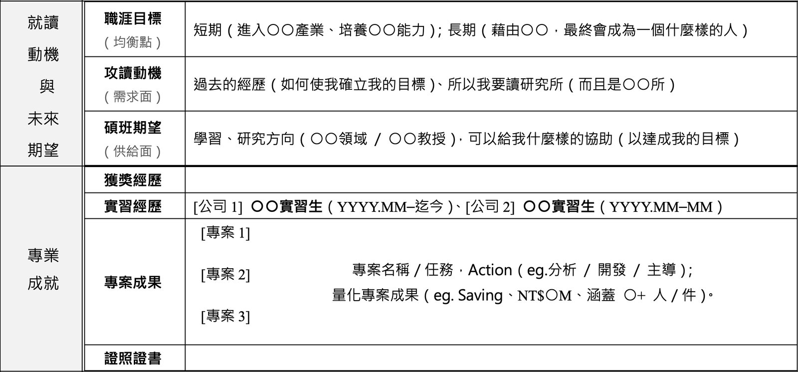
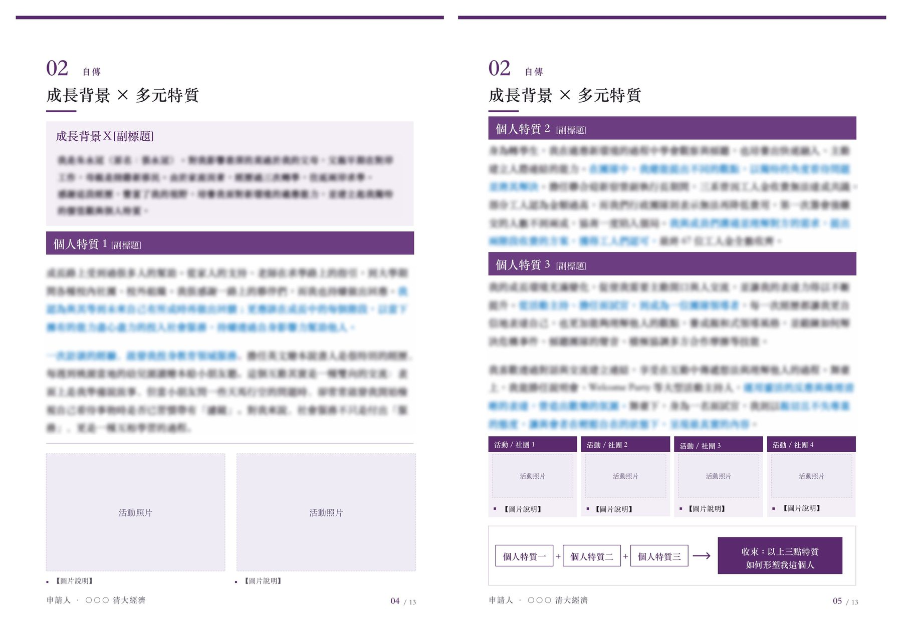
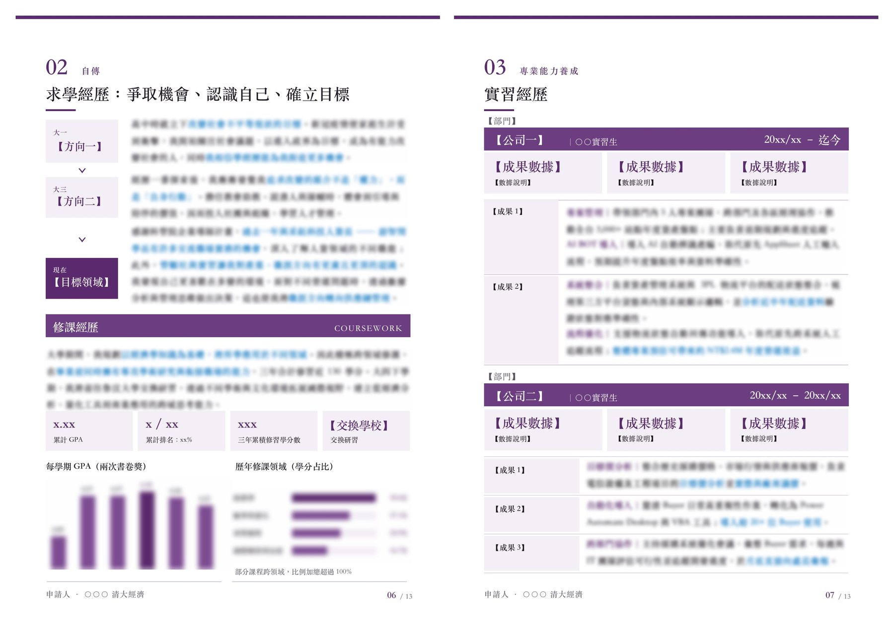
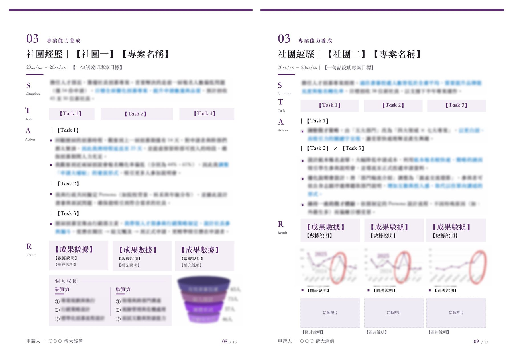

首頁 / 書審
書審
取書審分數前 66 名進口試。口試時教授手上會有個人資料表，國企所需另準備兩份成績單正本。
01前言
故事線
一條是職涯發展，另一條是我希望成為什麼樣的人。著重描寫為了達成這個目標，我過去付出了哪些行動、成果如何、對我帶來了哪些影響。
自我能力評估
不建議使用雷達圖。我認為這些能力無法被量化，我也無法解釋我的領導力跟數學能力孰優孰劣。我推薦 SWOT＋TOWS，簡單明瞭。
要特別注意 W 這項：SWOT 比較的對象是其他申請者（例如科系背景、修課領域），所以 W 本身就是必然存在的劣勢，不會、也不應造成嚴重的扣分。
就讀動機
因為我是經濟系的，所以分成需求、供給、機會成本三點來寫：
- 需求：解釋我攻讀碩班的動機。
- 供給：說明 OO 所在課程、師資、學校與學院各層面可以如何幫助我。
- 機會成本：作為收束，例如不直接進入職場的原因 → 因此 OO 所是最適合我的下一步。
個人資料表
設計編排很重要。商研所的規定多，國企所的排版彈性比較大。我把文字欄位改成表格形式，展現資訊呈現的功力，也藉此突顯個人亮點。詳見 02 個人資料表。
02個人資料表
這應該是書審、面試中最重要的一項。書審時精心打磨，口試要能力透紙背。
- 揚長避短（例如多益 860–895 → 寫「金色」，900 以上 → 直接寫分數）。
- 商研所可以 2 頁但版面限制較多，國企所雖限 1 頁但排版彈性更大。不過我覺得 2 頁很怪，也沒太多經歷，所以都放 1 頁。
- 試著把文字欄位改成表格，展現資訊呈現的功力，也能突顯個人亮點。
- （國企）故事線：這兩個欄位應該要能連成一條故事線，或說明為什麼有了轉變。
- 我放的是實習期間做的三個專案，因為都是實打實有落地、有 impact 的。商研、國企都滿重視社團，直接寫社團也不錯。


03學習計畫書
0. 封面、目錄
如果要做封面就必須設計，畢竟是第一頁。
- 1–2 句話 → 提及自己未來的目標，並說明如何達成。
- 3–4 組數據（如 GPA、排名、獎項、檢定成績）。
目錄應該是無所謂。有些人會建議動機要寫在前面，但我的故事線比較不適合把動機放在前面；有目錄也讓對動機有興趣的教授可以直接跳到該頁。
1. 個人簡歷
- 再次提及目標（同封面）。
- 感覺放 CV 怪怪的，所以根據整體書審的排版客製化了一份履歷。


2. 自傳
- 成長背景 × 多元特質：簡單帶過成長背景，作為導入 → 我的特質如何建立。
- 個人特質：寫好個人特質真是一門學問。內容不應花篇幅去描述這個特質，我也不會在內文再提到這個特質的詞，而是透過個人經歷（社團、實習等）讓教授感受到我有這個特質。最後這些特質（經歷）會形塑出我在 1/ 團隊中、2/ 未來職涯中是一個什麼樣的人。
- 不知道選哪些特質可以參考系所官網，我認為不外乎領導力、溝通能力、團隊合作，至少要寫到 1–2 個。

3. 求學與修課經歷
- 求學經歷（why / so what）：為什麼讀 OO 系、當時的目標是什麼 → 職涯方向的轉變 / 探索 → 現在想發展的領域。
- 修課經歷
- 過去三年修了什麼課、如何規劃 → 成績如何？修課領域占比？
- 未來：如何連結到 OO 所、OO 所可以給我什麼幫助。
我去年用折線圖；今年成績是往上修的，比較適合柱狀圖，總之依自己的成績走勢調整。修課占比則是這整頁故事的輔助資料。

4. 專業能力養成實習、社團、競賽、專案、專題等
沒東西寫 → 表格；東西很多 → STAR 原則。ST 的篇幅可以縮減，重點還是 Action。
- S：簡單介紹背景、職責、目標（約 2–3 行）。
- T：分區塊呈現。
- A：根據 T 的區塊列點說明。
- R：圖表、數據＋說明：impact 多大、跟過去相比提升多少、其中我貢獻了多少等等。
5. 自我能力評估
- SWOT、TOWS → 為什麼我適合讀台大 OO 所。
- 特別注意 W：SWOT 比較的對象是其他申請者（例如商管背景、工工背景），這本身就是必然存在的劣勢，不至於造成嚴重扣分（避免寫到自己英文很爛之類的，一定大扣分）。
- TOWS 可以說明如何展現優勢、劣勢如何應對。
- 不建議雷達圖。

6. 就讀動機
- 個人需求：攻讀碩班的動機：重申我的目標 → 所以我要讀研究所，而且是 OO 所。
- OO 所的供給：我分三段——課程面、師資面、學校 / 學院資源。
- 機會成本 / 雙向的契合：例如不直接進入職場的原因 → 貴所是最適合我的下一步。

7. 讀書計劃
- 現在 ~ 研究所
- 比起想做什麼，更好的是寫正在做什麼、可以達成什麼目的。
- 題外話：去年在商研所寫的計畫全部達成（或許也是我敢在口試說自己二戰的原因？）。
- 研究所階段
- 修課：看這幾年實際有開的課，系網不太準（很多都沒開了），可以去 link 找。
- 課外：競賽、社團、專案、社會服務。
- 未來 3–5 年；10 年
- 進入什麼產業、做什麼 → 這些規劃如何達成我的目標。
- 最後一定要再接回自己的目標。
- 生涯規劃
- 除了職涯，前面也提到想成為什麼樣的人，在這裡替故事線收尾：現在已經透過哪些經歷實踐（圖片輔助）→ 未來還會透過什麼形式達成目標。

04其他有利審查資料
整理中。
05書審心得精選
整理中。